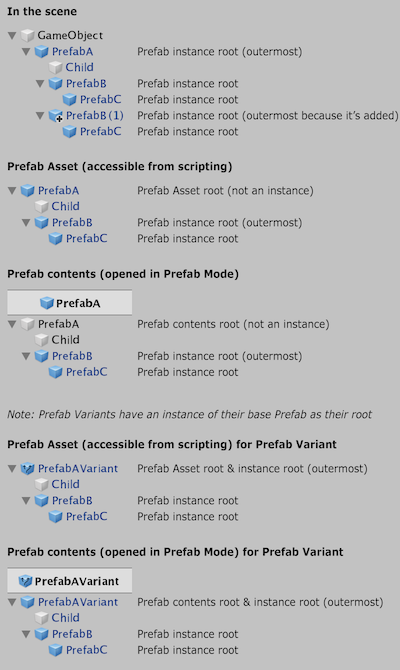

PrefabUtility.IsOutermostPrefabInstanceRoot
Parameters
| gameObject | The GameObject to check. |
Returns
bool True if the GameObject is an outermost Prefab instance root.
Description 描述
Is the GameObject the root of a Prefab instance, excluding nested Prefabs?
Returns true if the GameObject is the root GameObject of a Prefab instance, which is not itself part of another Prefab instance.
This also returns true for outermost Prefab instance roots inside a Prefab Asset. Note that a Prefab Asset is not in itself a Prefab instance, but it may contain Prefab instances.
If the GameObject is a Prefab instance root which is an added GameObject to another Prefab instance, it will return true, since it is not itself part of another Prefab instance.
The method will return false if the given object is not part of a Prefab instance. This includes GameObjects that have been added and not applied to a Prefab instance.

Overview of which objects are Prefab instance roots.
In the editor, outermost Prefab instance roots have the Overrides dropdown, whereas other Prefab instance roots don’t.
See Also: IsAnyPrefabInstanceRoot.